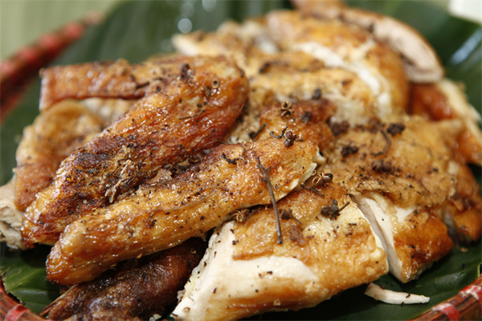

Giá : 250.000 VNĐ/con (1.5-2kg)
Trong văn hóa ẩm thực của bà con đồng bào Thái vùng Tây Bắc, thì các món nướng là có mùi vị thơm ngon nhất, bởi nhẽ bà con dùng Hạt Mắc Khén để tẩm ướp thịt, cá! Chứ không dùng, thậm chí là ngày xưa không có hạt Tiêu như miền xuôi. Cộng thêm nguyên liệu thịt & cá ngon, cách tẩm ướp và kết hợp nhiều loại gia vị, rau thơm khiến cho món nướng của bà con đồng bào Thái cực kì ngon, ăn một lần nhớ mãi. Và ít người biết rằng, không phải cứ nướng là phải nướng cho vàng, cho khô! Tôi ăn, ở, đi chơi cùng bà con đồng bào Thái ở Lai Châu nhiều, thường xuyên vào bếp để nấu nướng (tất nhiên cùng đi, cùng làm, cùng ăn, chứ ai hầu được, có phỏng các anh chị) thì đối với các món nướng, sẽ có 2 kĩ thuật & cách nướng như sau:
+ NƯỚNG GIÒN: Tức là thịt, cá phải được nướng kĩ, đều lửa, món ăn phải khô và giòn!
+ NƯỚNG CHÍN TỚI: Không cần thiết phải nướng giòn, khô!
Với kinh nghiệm 10 năm trong nghề, đầu bếp của chúng tôi sẽ đem đến cho quý khách những miếng gà nướng thơm, ngon nhất. Đảm bảo sẽ làm hài lòng tất cả khách hàng dù là những thực khách khó tính nhất
Sau đây là một số hình ảnh của quá trình nướng gà: